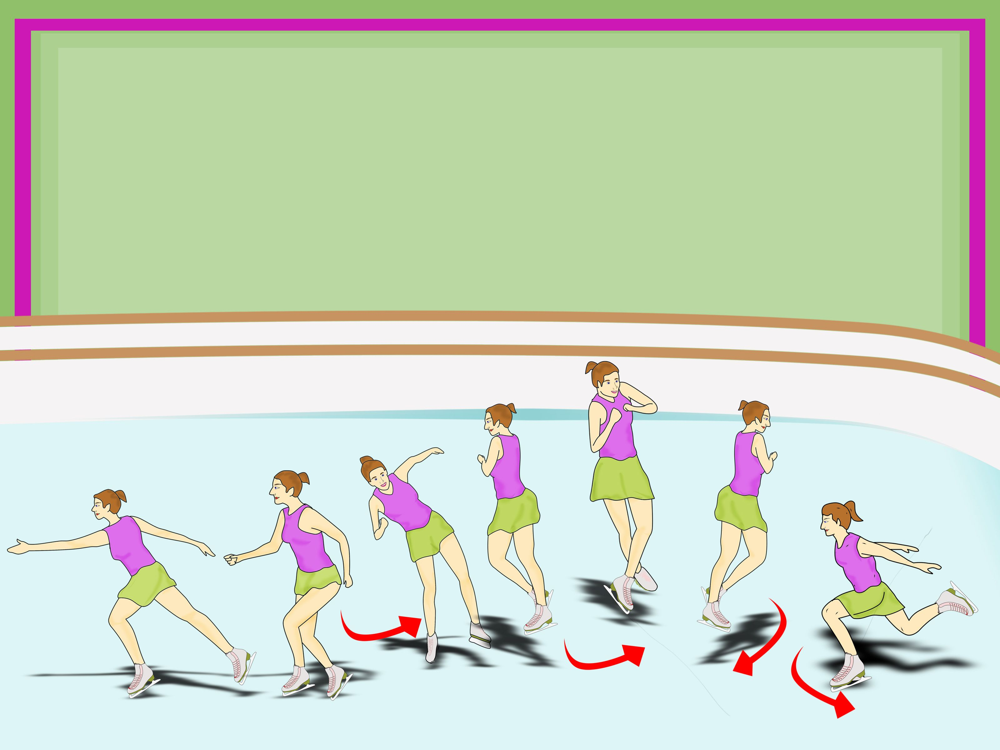

SALCHOW
Salchow: Se ejecuta patinando hacia atras, una pierna va apoyada en el piso y la otra queda libre, la pierna libre pasa de atras hacia adelante, se pone el freno (conocido como pique) y se salta una vuelta completa.
Se aterriza con la pierna opuesta de apoyo y la pierna libre sale de adelante a atras (saludo), pasa de filo interno atras a filo externo atras.
TOELOOP
ToeLoop: Se ejecuta patinado hacia atras, una pierna va apoyada en el suelo y la otra queda libre, la pierna libre se posiciona adelante, pasa hacia atras de la pierna apoyada y con un pique ejecuto un salto de vuelta entera.
Se aterriza con la misma pierna de apoyo y la pierna libre sale de adelante a atras (saludo), no cambia de filo.
LOOP
Loop: Se ejecuta patinando hacia atras, la pierna apoyada busca el impulso para saltar una vuelta completa,
se aterriza y la pierna libre sale de adelante hacia atras(saludo), no se cambia de filo.
FLIP
Flip:Se ejecuta patinando hacia atras, una pierna va apoyada al suelo y la otra queda libre, la pierna libre se posiciona atras,de ahi hace el pique y se hace la vuelta completa,
se aterriza con la pierna opuesta de apoyo y la pierna libre sale de adelante a atras (saludo), pasa de filo interno adelante a filo externo adelante.
LUTZ
Lutz: Se ejecuta patinado hacia atras, el Lutz que se ejecuta de la misma forma que el Flip a diferencia que la pierna de apoyo se apoya en el filo externo atras, osea no cambia de filo al aterrizar.
AXEL

Se ejecuta con entrada hacia atras, media vuelta y salto hacia adelante, una pierna va apoyada al piso y la libre pasa de atras hacia adelante cambiando la pierna de apoyo
y la pierna que antes estaba apoyada pasa a libre y se impulsa de atras hacia adelante para saltar (no hay pique) vuelta y media, aterrizo con la pierna opuesta de apoyo y la pierna libre sale de adelante hacia atras (saludo)
pasa de filo externo adelante a filo externo atras.